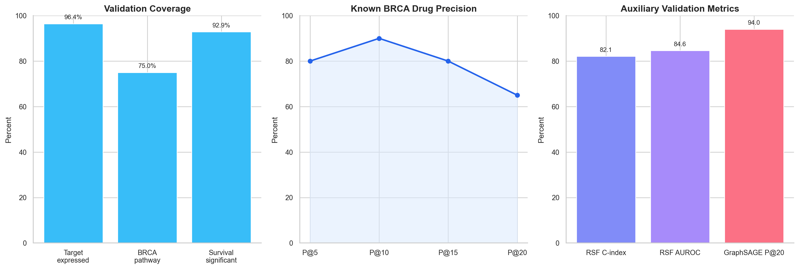
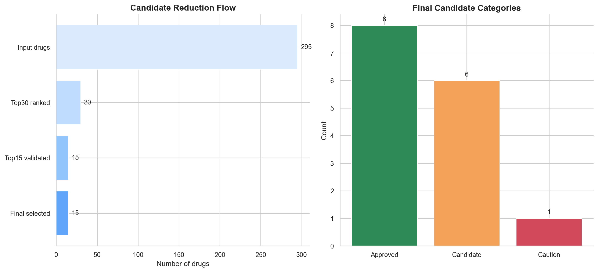
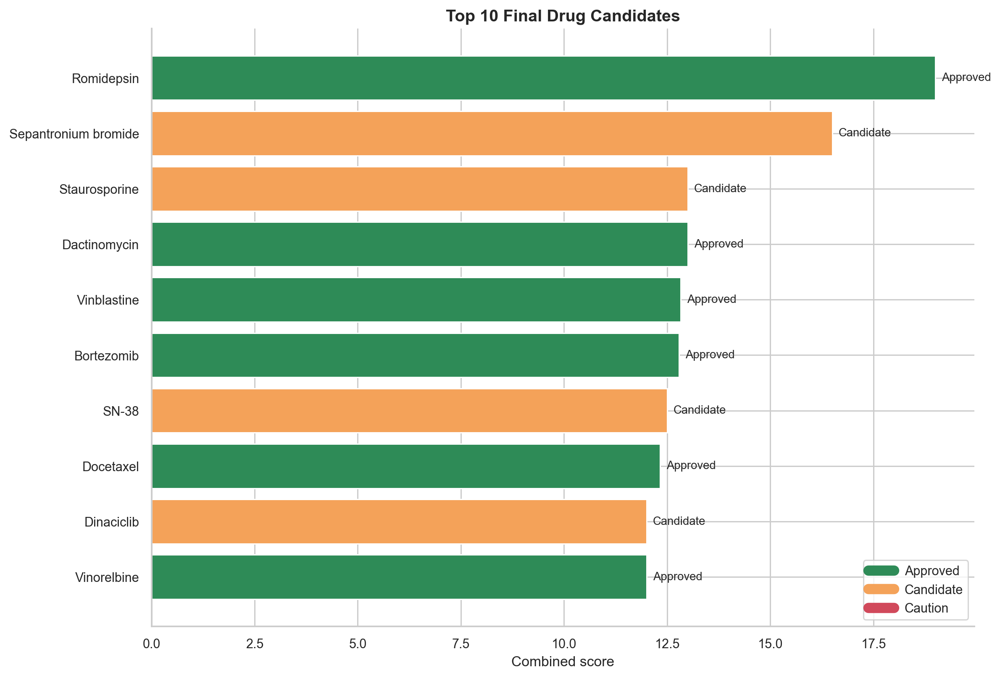

본 프로젝트는 유방암(BRCA)을 대상으로 약물 재창출(Drug Repurposing) 분석 파이프라인을 구축하고, 다중 바이오데이터와 머신러닝 기반 예측을 활용해 우선 검토 가능한 후보 약물을 도출하는 것을 목표로 한다. 데이터 준비, Feature Engineering, 모델 학습, 외부 검증, ADMET 평가까지의 전 과정을 수행하고 그 결과를 정량 지표 중심으로 문서화하였다.
신약 개발은 막대한 시간과 비용이 요구되기 때문에, 기존 승인 약물 또는 임상 경험이 축적된 물질을 새로운 적응증에 적용하는 약물 재창출 전략은 현실적인 대안으로 활용된다. 본 프로젝트에서는 GDSC, DepMap, LINCS, DrugBank, ChEMBL, METABRIC, ADMET 등 다양한 공공 데이터를 통합하여 유방암과 관련된 약물 반응을 예측하고, 후속 검토 대상 후보를 좁히는 과정을 수행하였다.
본 제출용 보고서는 개인별 역할보다는 프로젝트의 데이터 구성과 분석 구조를 중심으로 정리하였다. 본 프로젝트의 핵심은 Drug Repurposing 방법론을 유방암 데이터에 적용하여, 각 단계에서 생성된 데이터와 모델 결과를 정량적으로 검증하는 데 있다.
전체 분석은 크게 ① 데이터 준비, ② Feature Engineering, ③ 다중 모델 학습, ④ 앙상블, ⑤ 외부 검증, ⑥ ADMET Gate의 여섯 축으로 구성된다. 다시 말해 단순히 예측 점수를 높이는 것이 아니라, 서로 성격이 다른 공개 데이터셋을 연결하여 약물 반응 예측의 생물학적 근거와 안전성까지 함께 검토하는 구조를 갖는다.
| 구분 | 핵심 데이터 | 파이프라인 내 역할 | 비고 |
|---|---|---|---|
| 약물 반응 라벨 | GDSC2 BRCA 약물 반응 데이터 | 학습용 회귀 타깃(ln_IC50)과 binary sensitivity 라벨 생성의 기준이 된다. |
품질 우선 원칙에 따라 GDSC2만 사용 |
| 세포주 생물학 정보 | DepMap CRISPR gene effect | 세포주별 유전자 의존성 패턴을 수치화하여 sample-level feature의 기반으로 사용한다. | Long 형태를 wide 형태로 변환 |
| 약물 perturbation 정보 | LINCS Level 5 MCF7 signatures | 약물이 세포 내 유전자 패턴을 어떻게 변화시키는지 반영하여 pair-level feature를 만든다. | 약물 효과를 유전자 반응 수준에서 반영 |
| 약물 지식 베이스 | DrugBank, ChEMBL | 약물명 정규화, SMILES 연결, drug-target mapping 보강, 기전 정보 확보에 사용한다. | 화학 구조와 타깃 정보의 핵심 출처 |
| Pathway 정보 | MSigDB | 세포주 gene-level profile을 pathway 단위 요약 점수로 변환하는 데 사용한다. | sample pathway feature 생성 |
| 외부 검증 | METABRIC expression / clinical | 외부 검증 단계에서 발현, pathway, 생존 유의성, P@K 검증을 수행하는 환자 코호트 역할을 한다. | BRCA 외부 검증용 |
| 안전성 평가 | TDC ADMET benchmark | 22개 assay를 이용해 최종 후보를 Approved, Candidate, Caution으로 분류한다. | 후보 축소 및 우선순위화 |
| 보조 해석 자산 | OpenTargets, STRING, TCGA inventory | 생물학적 연관성 해석과 후속 확장 분석을 위한 보조 지식 자산으로 활용하였다. | 주 학습 입력보다는 해석과 확장용 자산 |
실행 환경은 Python 3.10 기반 분석 환경과 Java 17, Nextflow, AWS Batch, LightGBM, XGBoost, CatBoost, PyTorch, PyTorch Geometric 등으로 구성하였다. Feature Engineering 단계는 배치 기반 워크플로우로 수행했고, 모델 학습 단계는 동일한 입력 파일과 설정을 사용해 반복 가능하도록 정리하였다. 또한 실행 환경이 달라져도 주요 산출물과 결과 흐름이 안정적으로 유지되는지를 내부적으로 점검하여 환경 간 일관성을 확인하였다.
본 프로젝트는 하나의 거대한 통합 테이블을 바로 학습에 넣는 방식이 아니라, 서로 다른 생물학적 의미를 갖는 데이터셋을 단계적으로 연결하는 구조를 취한다. 각 데이터셋이 맡는 역할을 정리하면 다음과 같다.
| 데이터셋 | 핵심 내용 | 본 프로젝트에서의 사용 방식 | 선정 이유 |
|---|---|---|---|
| GDSC2 | 항암제에 대한 세포주 반응 값(ln_IC50)을 포함한 약물 반응 데이터이다. 본 분석에서는 BRCA 관련 샘플과 HCC1806을 포함한 13,388건, 52개 세포주, 295개 약물로 정리하였다. |
모델의 주 회귀 타깃을 제공하며, FE 단계에서 sensitivity binary label 생성의 기준이 된다. | 직접적인 약물 효능 관측치이기 때문에 전체 파이프라인의 중심 라벨 데이터이다. |
| DepMap CRISPR | 세포주별 유전자 knockout 효과를 long format으로 보유한 데이터이다. 본 분석에서는 20,443,404행, 1,150개 세포주, 18,443개 유전자를 다루었다. | 세포주 gene dependency를 wide matrix로 변환하여 sample-level feature로 사용하였다. | 암세포가 어떤 유전자에 취약한지를 보여주기 때문에 약물 반응 예측의 중요한 생물학적 맥락을 제공한다. |
| LINCS MCF7 | 약물 처리 후 유전자 발현이 어떻게 이동하는지 담은 perturbation signature 데이터이다. 이번 데이터는 63,367개 시그니처와 12,328개 유전자 축으로 구성되어 있다. | 세포주 gene-level profile과 약물 signature의 유사도 및 reversal 정도를 pair-level feature로 계산하는 데 사용하였다. | 약물이 실제로 세포 내부 분자 상태를 어떤 방향으로 변화시키는지를 반영할 수 있어, 단순 화학 구조 정보보다 풍부한 약물 효과 정보를 준다. |
| DrugBank | 약물-타깃 관계, 외부 식별자, 약물 기본 속성을 제공하는 약물 지식 베이스이다. | drug-target mapping 구축, 타깃 유전자 테이블 정리, 후속 해석에서 약물 기전 설명에 활용하였다. | 후보 약물이 어떤 분자 타깃을 갖는지 명확히 연결하기 위해 필요하다. |
| ChEMBL | 약물 화합물, 활성, 타깃, 메커니즘 정보를 포함하는 공공 화학생물 데이터베이스이다. | DrugBank과 함께 약물명 정규화, SMILES 연결, 기전 보강, 약물 매핑 우선순위 소스로 활용하였다. | 동일 약물의 이명과 구조 표현 차이를 줄이고, 타깃 정보를 보강하는 데 유리하다. |
| MSigDB | Pathway 단위 gene set 모음이다. | 세포주 유전자 profile을 pathway score로 요약하고, 약물 타깃이 어떤 pathway와 연결되는지 계산하는 데 사용하였다. | 개별 유전자 수준 특징을 해석 가능한 생물학적 경로 수준으로 압축할 수 있다. |
| METABRIC | 유방암 환자의 발현 및 임상 정보를 포함하는 외부 코호트 데이터이다. | 외부 검증 단계에서 타깃 발현, BRCA 관련 pathway, 생존 유의성, 정밀도 검증을 수행하였다. | 세포주 기반 모델이 환자 데이터에서도 타당한 방향성을 갖는지 확인하는 핵심 검증 자산이다. |
| ADMET | 흡수, 분포, 대사, 배설, 독성과 관련된 22개 benchmark assay 묶음이다. | 최종 상위 약물을 안전성과 개발 가능성 관점에서 걸러내는 후보 평가 단계의 입력으로 사용하였다. | 예측 성능이 높더라도 실제 후보로 가져가기 어려운 약물을 후처리 단계에서 걸러내기 위해 필요하다. |
| OpenTargets / STRING / TCGA | 질환 연관성, 단백질 상호작용, 암 코호트 메타데이터 등 보조 생물학 지식 자산이다. | 후속 생물학적 해석과 파이프라인 확장 가능성 확보를 위한 보조 자산으로 구성하였다. | 주 학습 입력은 아니지만, 결과 해석과 확장 연구의 기반이 된다. |
전처리 단계의 핵심 목표는 전처리 완료 데이터를 기반으로 학습 가능한 입력 데이터를 만드는 것이었다. 약물 반응, 세포주 의존성, 약물 구조, 타깃 정보, 유전자 perturbation 정보를 동일한 pair 단위로 연결할 수 있도록 정합성을 맞추고, 데이터 버전 차이로 인해 발생할 수 있는 편차를 최소화하는 방향으로 전처리를 진행하였다.
| 전처리 작업 | 실제 수행 내용 | 의미 |
|---|---|---|
| 원본 보호 | 전처리 완료 원본 데이터는 보존한 채, 분석용 입력 자산을 별도로 구성하였다. | 원본 훼손 없이 분석용 데이터 흐름을 분리하였다. |
| GDSC2 선별 | gdsc2_basic_clean에서 BRCA 및 HCC1806만 필터링해 gdsc_ic50.parquet를 생성하였다. |
품질이 더 우수한 GDSC2만 사용해 라벨 신뢰도를 높였다. |
| 라벨 표준화 | cell_line_name, DRUG_ID, ln_IC50를 기준으로 pair를 구성하고, 중복 pair는 median으로 집계하였다. |
동일 pair가 여러 번 존재할 때 라벨의 일관성을 유지한다. |
| Binary label 생성 | binary label이 없으면 ln_IC50 ≤ quantile(0.3) 규칙으로 sensitive(1)를 생성하였다. |
회귀 중심 학습 외에도 downstream 이진 해석이 가능해진다. |
| DepMap wide 변환 | CRISPR long 데이터를 gene 단위 column을 갖는 wide table로 pivot하고, 수치형 결측은 median으로 채웠다. | 세포주별 고차원 gene dependency 벡터를 안정적으로 만들 수 있다. |
| 약물명 정규화 | drug name을 소문자화, 특수문자 제거 등으로 정규화한 후 SMILES를 연결하였다. | 서로 다른 데이터베이스의 약물명 표기 차이를 줄인다. |
| SMILES 매핑 | 295개 약물 중 243개(82.4%)에 대해 구조 정보를 연결하였다. | 화학 구조 feature 생성 가능 범위를 정량적으로 확인하였다. |
| LINCS fast-track 적용 | MCF7 기반 LINCS 발현 시그니처 요약 행렬을 사용하여 약물 perturbation feature를 구성하였다. | 유전자 반응 기반 pair feature를 안정적으로 생성할 수 있었다. |
이 과정에서 실제로 준비된 핵심 입력은 gdsc_ic50.parquet(13,388 rows / 52 cell lines / 295 drugs), depmap_crispr_long_20260408.parquet(20,443,404 rows / 1,150 cell lines / 18,443 genes), lincs_mcf7.parquet(63,367 signatures × 12,328 genes), drug_features_catalog.parquet(82.4% 구조 매칭)이다. 즉 전처리 단계는 단순 복사가 아니라 학습 가능한 pair dataset을 만들기 위한 정합성 정리 단계라고 볼 수 있다.
Feature Engineering은 Nextflow 파이프라인의 네 개 process를 중심으로 구성하였다. 단일 테이블을 바로 학습에 넣는 대신, sample-level, drug-level, pair-level feature를 단계적으로 만든 후 최종 병합하는 구조를 사용하였다. 실제 실행은 AWS Batch에서 수행되었고 전체 FE 런타임은 약 8분 7초였다.
| 프로세스 | 주요 처리 내용 | 대표 산출물 |
|---|---|---|
prepare_fe_inputs |
GDSC 라벨, DepMap sample feature, drug structure source를 읽어 sample_features, drug_features, labels, mapping_table, join QC를 생성한다. |
sample_features.parquet, drug_features.parquet, labels.parquet |
build_features |
sample과 drug feature를 pair 단위로 병합하고, high-missing column 제거, median/UNK imputation, variance filtering, leakage column 제거를 수행한다. | features.parquet, labels.parquet, manifest.json |
build_pair_features |
세포주 pathway score, 약물 chemistry, LINCS similarity, drug-target interaction feature를 계산하여 pair-level matrix를 생성한다. | pair_features_newfe.parquet, pair_features_newfe_v2.parquet |
upload_results |
생성된 산출물과 실행 로그를 정리하고 리포트를 남긴다. | 결과 파일, 실행 리포트 |
| Feature 그룹 | 생성 방식 | 포함 의미 |
|---|---|---|
| Sample pathway feature | 세포주 gene-level profile을 MSigDB gene set 기준으로 평균화해 pathway score로 변환하였다. | 개별 유전자 수준의 취약성 정보를 해석 가능한 경로 단위 특징으로 압축한다. |
| Drug chemistry feature | RDKit로 Morgan fingerprint(radius=2, nbits=2048)와 분자 descriptor를 계산하였다. | 약물 구조적 유사성과 화학적 물성을 수치화한다. |
| Pair LINCS feature | 세포주 profile과 약물 LINCS signature 사이의 cosine, Pearson, Spearman, reverse score를 계산하였다. | 약물이 세포주의 분자 패턴을 얼마나 뒤집거나 유사하게 움직이는지 반영한다. |
| Pair target feature | 약물 타깃 유전자와 세포주 상/하위 유전자 집합의 overlap, expression summary, pathway hit, coverage ratio를 계산하였다. | 약물 기전과 세포주 분자 상태의 직접적인 접점을 나타낸다. |
특히 FE 단계에서 중요한 품질 관리 규칙은 다음과 같다. 첫째, label pair와 연결되지 않는 sample/drug는 join QC로 확인하였다. 둘째, 결측이 과도한 column은 제거해 noise를 낮췄다. 셋째, 수치형 결측은 median, 범주형 결측은 UNK로 보정했다. 넷째, 분산이 거의 없는 feature는 제거했다. 다섯째, 구조 정보를 찾지 못한 약물은 chemistry feature를 0 또는 결측 보정으로 안전하게 처리해 파이프라인이 끊기지 않도록 했다.
모델은 단일 family에 의존하지 않도록 ML 8종, DL 5종, Graph 2종으로 구성하였다. Tree 계열은 고차원 tabular feature에 강하고, DL 계열은 feature 간 비선형 상호작용을 포착하는 데 유리하며, Graph 계열은 cell-drug 관계를 그래프 구조로 일반화해보는 목적을 가진다. 또한 RSF는 예측 자체보다는 survival 기반 보조 해석을 위한 모델로 활용하였다.
| 모델 | 유형 | 설계 의도 및 특징 |
|---|---|---|
| LightGBM | ML | 고차원 수치형 feature에서 빠르고 안정적인 gradient boosting baseline이다. 상위 성능 모델군의 핵심 축으로 활용하였다. |
| LightGBM-DART | ML | tree dropout을 도입해 과적합 완화를 기대한 변형 모델이다. 기본 LightGBM 대비 regularization 효과를 확인하기 위해 포함했다. |
| XGBoost | ML | 강한 regularization과 검증된 boosting 성능을 가진 대표 모델이다. LightGBM과 다른 split/optimization 특성을 비교하기 위해 사용했다. |
| CatBoost | ML | ordered boosting 기반으로 안정적인 boosting 성능을 보이는 모델이다. 본 실험에서는 최고 ML 성능을 기록했다. |
| RandomForest | ML | boosting이 아닌 bagging tree ensemble의 성능 하한선을 확인하기 위한 baseline이다. |
| ExtraTrees | ML | 더 무작위성이 큰 tree ensemble로 variance reduction 가능성을 확인하기 위해 포함했다. |
| Stacking Ridge | ML | 여러 base model의 예측값을 다시 결합하는 메타 모델이다. base model 후보라기보다 상위 앙상블 성능 확인용이다. |
| RSF | ML / Survival | Random Survival Forest로서 회귀 성능보다 생존 분석 연계 지표를 보기 위한 보조 모델로 사용하였다. |
| ResidualMLP | DL | 고차원 입력을 residual block으로 깊게 통과시켜 안정적으로 학습하는 구조이다. |
| FlatMLP | DL | BatchNorm과 dropout이 포함된 다층 perceptron으로, tabular pair feature를 직접 흡수하는 단순하면서 강한 DL baseline이다. |
| TabNet | DL | feature selection attention을 단계적으로 적용하는 구조로, 중요한 feature를 선택적으로 읽는 효과를 기대했다. |
| FT-Transformer | DL | tabular feature를 token처럼 취급하여 self-attention으로 상호작용을 학습하는 모델이다. |
| Cross-Attention | DL | sample feature와 drug feature를 분리한 뒤 attention으로 상호작용을 학습한다. 구조적으로 약물-세포주 pair에 잘 맞는 설계다. |
| GraphSAGE | Graph | cell node와 drug node를 이분 그래프로 놓고 이웃 정보 집계를 통해 pair 값을 예측한다. 미지 약물 일반화 성향을 보기 위해 drug-split CV를 적용했다. |
| GAT | Graph | attention 기반 graph aggregation을 시도한 모델이다. 관계의 중요도를 가중치로 반영하는 특성을 확인하기 위해 포함했다. |
| 평가 항목 | 기준 | 해석 |
|---|---|---|
| Spearman | ≥ 0.713 |
순위 일관성이 기준 이상인지 확인한다. |
| RMSE | ≤ 1.385 |
절대 오차 규모가 기준 이하인지 확인한다. |
| 평가 방식 | 5-fold CV |
fold 간 안정성을 같이 확인한다. |
| Graph 특수 규칙 | drug-split CV |
보지 못한 약물에 대한 일반화 성능을 더 엄격히 점검한다. |
| 학습 pair 수 | 7,730 pairs |
FE 이후 실제 모델 입력으로 사용한 pair 규모이다. |
본 프로젝트는 단일 지표로 모델을 평가하지 않고, 순위 일치도, 절대 오차, 선형 상관, 설명력, 과적합 정도, 상위 후보 정밀도, 생존 분석 구분력까지 함께 보았다. 약물 추천 문제에서는 상위 후보를 얼마나 안정적으로 정렬하느냐가 중요하므로 Spearman과 P@K 계열 지표의 해석 비중이 특히 크다.
| 지표 | 의미 | 해석 기준 |
|---|---|---|
| Spearman | 예측값과 실제값의 순위 상관을 나타낸다. 약물 후보의 순서를 얼마나 일관되게 맞추는지 보는 핵심 지표다. | 0.8 이상은 매우 우수, 0.7~0.8은 강한 수준, 0.5~0.7은 중간 수준, 0.5 미만은 순위 신뢰도가 낮다고 판단할 수 있다. |
| RMSE | 예측값과 실제값 사이의 평균적인 오차 크기를 나타낸다. 값이 작을수록 좋다. | 같은 데이터셋 안에서는 작은 차이도 의미가 있으며, 본 분석에서는 1.385 이하를 우수 기준으로 사용하였다. |
| Pearson | 예측값과 실제값의 선형 상관 정도를 나타낸다. | 0.85 전후면 상당히 강한 선형 일치를 보인다고 해석할 수 있다. |
| R² | 모델이 실제 변동성을 얼마나 설명하는지를 보여준다. | 0.7 이상이면 설명력이 높은 편으로 볼 수 있고, 0에 가까우면 설명력이 낮다. |
| Train-Valid Gap | 학습 성능과 검증 성능의 차이로, 과적합 여부를 확인하는 데 사용한다. | Gap이 작을수록 일반화가 잘 된 것으로 보고, Gap이 크면 과적합 가능성을 의심한다. |
| P@K | 상위 K개 추천 중 실제로 의미 있는 후보가 얼마나 포함되는지를 나타낸다. | 값이 높을수록 Top 후보의 실용성이 높다. 후보 추천 문제에서 직관적인 품질 지표다. |
| C-index | 생존 분석에서 위험도 순위를 얼마나 잘 맞추는지 나타낸다. | 0.8 이상이면 순위 구분력이 매우 양호한 편으로 해석할 수 있다. |
| AUROC | 양성과 음성을 얼마나 잘 분리하는지 보여주는 이진 분류 지표다. | 0.8 이상이면 분리력이 좋은 편이며, 0.5에 가까우면 무작위 수준에 가깝다. |
정리하면, 본 프로젝트에서 Spearman이 0.79~0.80 수준으로 나온 상위 모델들은 약물 후보의 순위를 비교적 신뢰할 수 있는 수준으로 정렬했다고 볼 수 있다. 여기에 RMSE가 1.32~1.34 수준으로 함께 유지되면 순위 정확도와 절대 오차가 모두 안정적인 모델이라고 해석할 수 있다.
앙상블 단계에서는 단일 모델 점수만으로 후보를 정하지 않고, OOF(out-of-fold) 예측을 기반으로 여러 모델을 결합하였다. 최종 앙상블은 CatBoost, LightGBM, XGBoost, FlatMLP, ResidualMLP, Cross-Attention의 예측값을 Spearman 기반 가중평균으로 통합하는 방식으로 구성하였다. 이후 외부 검증 단계에서는 METABRIC 코호트로 생물학적 타당성을 점검했고, 최종 후보 평가 단계에서는 22개 ADMET assay를 통해 후보를 안전성 관점에서 재분류하였다.
| 단계 | 주요 수행 내용 | 진행 상태 |
|---|---|---|
| 환경 구축 단계 | 실행 환경 구성, 배치 워크플로우 점검, 내부 일관성 확인 | 완료 |
| 전처리 단계 | GDSC, DepMap, LINCS, 약물 구조 정보 정합화 및 입력 자산 구성 | 완료 |
| Feature Engineering 단계 | 기본 feature와 pair-level feature 생성 | 완료 |
| 모델 학습 단계 | ML, DL, Graph 모델 15종 학습 및 비교 | 완료 |
| 앙상블 단계 | 상위 성능 모델 기반 앙상블 구성 및 통합 예측 생성 | 완료 |
| 외부 검증 단계 | METABRIC 기반 발현, 생존, 정밀도 검증 | 완료 |
| 최종 후보 평가 단계 | ADMET Gate 적용 및 최종 후보 분류 | 완료 |
| 프론트엔드 | 대시보드/최종 UI 고도화 | 진행 중 |
데이터 준비와 Feature Engineering 단계는 이후 모델 성능의 기반이 되는 만큼, 어떤 입력이 실제로 만들어졌는지를 명확히 정리할 필요가 있다. 본 분석에서 확보한 핵심 자산은 다음과 같다.
| 산출물 | 결과 | 해석 |
|---|---|---|
gdsc_ic50.parquet | 13,388 rows / 52 cell lines / 295 drugs | 회귀 라벨의 실제 학습 모수 공간이다. |
depmap_crispr_long_20260408.parquet | 20,443,404 rows / 1,150 cell lines / 18,443 genes | 세포주 분자 취약성을 반영하는 원본 sample feature 자산이다. |
drug_features_catalog.parquet | 243 / 295 matched (82.4%) | 화학 구조 feature 생성이 가능한 약물의 커버리지를 보여준다. |
lincs_mcf7.parquet | 63,367 signatures × 12,328 genes | 약물 perturbation 반응을 pair feature로 투영하는 핵심 입력이다. |
| FE 입력 pair | 7,730 sample-drug pairs | 실제 모델 학습에 사용된 최종 관측 단위이다. |
| FE 실행 시간 | 약 8분 7초 | AWS Batch 기반으로 안정적으로 실행되었다. |
| 주요 FE 산출물 | features.parquet, labels.parquet, pair_features_newfe_v2.parquet | 기본 feature와 pair feature가 분리되어 후속 모델 실험에 재사용 가능하다. |
이 단계의 중요한 결과는 “학습이 가능한 테이블을 만들었다”는 점 이상이다. GDSC의 반응값, DepMap의 세포주 취약성, LINCS의 약물 perturbation, DrugBank/ChEMBL의 타깃 지식이 하나의 sample-drug pair 단위로 통합되면서, 이후 모델은 단순한 drug fingerprint 예측이 아니라 생물학적 근거를 가진 다중 feature 예측 문제를 풀 수 있게 되었다.
총 15개 모델을 실행한 결과, tree boosting 계열과 일부 DL 계열이 가장 안정적인 성능을 보였다. 특히 CatBoost는 최고 ML 성능을 기록했으며, LightGBM, XGBoost, FlatMLP, ResidualMLP, Cross-Attention 역시 안정적인 성능을 보여 최종 앙상블 구성에 반영되었다. Graph 계열은 회귀 성능 자체는 낮았으나, ranking 보조지표 해석에서는 일정한 참고값을 제공했다.
| 모델 | 유형 | Spearman | RMSE | 경과시간 | 판정 | 해석 |
|---|---|---|---|---|---|---|
| LightGBM | ML | 0.7913 | 1.3404 | 3.6분 | PASS | 빠르고 안정적인 boosting baseline으로 최종 앙상블 구성에 포함되었다. |
| LightGBM-DART | ML | 0.7846 | 1.3979 | 5.7분 | FAIL | 순위 성능은 양호했지만 RMSE 기준을 약간 넘겨 최종 후보에서는 제외했다. |
| XGBoost | ML | 0.7889 | 1.3427 | 10.9분 | PASS | 강한 boosting 성능을 보였고 최종 앙상블 구성에 포함되었다. |
| CatBoost | ML | 0.7997 | 1.3170 | 113.0분 | PASS | 가장 높은 단일 모델 성능을 기록했지만 실행 비용이 매우 컸다. |
| RandomForest | ML | 0.6321 | 1.9637 | 1.1분 | FAIL | 비교용 baseline으로는 의미가 있었으나, boosting 계열 대비 성능 격차가 컸다. |
| ExtraTrees | ML | 0.6456 | 1.8789 | 1.5분 | FAIL | 랜덤성이 큰 tree ensemble이었지만 본 문제에서는 충분한 일반화 성능을 보이지 못했다. |
| Stacking Ridge | ML | 0.7942 | 1.3265 | 59.6분 | PASS | 메타 결합 구조로 좋은 성능을 보였으나, base ensemble 후보라기보다 상위 결합 모델로 해석하였다. |
| RSF | Survival | 0.6127 | 630.3337 | 1.6분 | FAIL | 회귀 지표는 부적합했지만 외부 검증 단계에서 C-index 0.8209, AUROC 0.8462를 제공하는 보조 해석 모델로 활용했다. |
| ResidualMLP | DL | 0.7875 | 1.3765 | 5.0분 | PASS | 고차원 tabular feature를 무난하게 소화했으며 최종 앙상블 구성에 포함되었다. |
| FlatMLP | DL | 0.7966 | 1.3327 | 11.6분 | PASS | DL 계열 최고 성능을 기록했고 최종 앙상블의 중요한 구성 요소가 되었다. |
| TabNet | DL | 0.7791 | 1.3869 | 17.1분 | FAIL | 성능이 거의 기준에 근접했으나 RMSE가 미세하게 초과했다. |
| FT-Transformer | DL | 0.7812 | 1.3944 | 21.4분 | FAIL | attention 기반 구조의 가능성은 보였지만 기준선은 넘지 못했다. |
| Cross-Attention | DL | 0.7854 | 1.3673 | 1.4분 | PASS | sample-drug 상호작용을 직접 반영하면서도 매우 짧은 시간에 안정적인 성능을 보였다. |
| GraphSAGE | Graph | 0.4094 | 2.3015 | 0.3분 | FAIL | 회귀 성능은 낮았으나 P@20 = 0.98로 ranking 해석에서는 참고 가능한 값을 제공했다. |
| GAT | Graph | -0.0002 | 2.6065 | 0.1분 | FAIL | 이번 설정에서는 graph attention의 장점을 살리지 못했다. |
종합하면 “최고 점수”만 보면 CatBoost가 가장 강했지만, 단일 모델 하나만으로 후보를 정하기보다 상위 모델군의 공통 신호를 결합하는 편이 더 안정적이었다. 또한 GraphSAGE와 RSF는 주 모델이라기보다 외부 검증과 ranking 보조 해석용으로 의미를 가졌다. 특히 Spearman 0.79~0.80 수준의 모델은 약물 후보의 순위를 신뢰성 있게 정렬할 수 있는 강한 모델군으로 볼 수 있으며, 여기에 RMSE 1.32~1.34 수준이 동반되면 순위 정확도와 절대 오차가 모두 안정적인 모델이라고 해석할 수 있다.
최종 앙상블은 CatBoost, LightGBM, XGBoost, FlatMLP, ResidualMLP, Cross-Attention의 OOF 예측을 Spearman 기반 가중평균으로 통합하여 구성하였다. 단일 모델 대비 순위 안정성과 절대 오차를 함께 개선하는 것이 목표였으며, 실제 결과에서도 가장 우수한 종합 성능을 보였다.
| 항목 | 최종 앙상블 결과 |
|---|---|
| 구성 | CatBoost, LightGBM, XGBoost, FlatMLP, ResidualMLP, Cross-Attention |
| Spearman | 0.8055 ± 0.0101 |
| RMSE | 1.3008 ± 0.0227 |
| Pearson | 0.8690 |
| R² | 0.7544 |
| Gap Spearman | 0.0004 |
모델별 가중치는 CatBoost 0.1687, LightGBM 0.1663, XGBoost 0.1665, FlatMLP 0.1673, ResidualMLP 0.1656, Cross-Attention 0.1655로 거의 균형적으로 분포하였다. 이는 상위 모델들이 특정 하나에 과도하게 의존하지 않고, 서로 다른 오차 패턴을 안정적으로 보완했다는 뜻으로 해석할 수 있다.
외부 검증 단계는 세포주에서 잘 맞는 모델이 환자 코호트에서도 타당한 방향성을 가지는지 확인하는 과정이었다. 본 보고서에서는 최종 앙상블 결과를 기준으로 외부 검증 결과를 정리한다.
| 검증 항목 | 결과 | 의미 |
|---|---|---|
| Target expressed | 27 / 28 | 추천 약물의 주요 타깃 대부분이 BRCA 코호트에서 실제 발현됨을 의미한다. |
| BRCA pathway relevant | 21 / 28 | 타깃이 유방암 관련 pathway와 연결되어 있음을 보여준다. |
| Survival significant | 26 / 28 | 생존 분석 관점에서도 상당수 후보가 유의한 방향성을 갖는다. |
| RSF C-index | 0.8209 | 생존 예측 순위 일관성이 양호함을 시사한다. |
| RSF AUROC | 0.8462 | 생존 관련 이진 구분 성능도 준수하다. |
| P@5 | 80.0% | 상위 5개 중 4개가 알려진 BRCA 약물 맥락과 부합한다. |
| P@10 | 90.0% | 상위 10개 기준 정밀도가 매우 높다. |
| P@15 | 80.0% | 상위 15개 범위에서도 높은 정밀도를 유지한다. |
| P@20 | 65.0% | 후보 범위를 넓혀도 일정 수준의 정밀도가 유지된다. |
| GraphSAGE P@20 | 0.94 | Graph 모델은 회귀보다 ranking 보조지표 관점에서 참고 가치가 있었다. |

최종 후보 평가 단계에서는 외부 검증을 통과한 상위 약물에 대해 22개 ADMET assay를 적용하여, 단순히 “잘 맞는 약물”이 아니라 “후속 검토 가치가 높은 약물”을 고르는 방향으로 후보를 재정렬했다. 이 단계 역시 최종 앙상블 결과를 기준으로 정리한다.
| 분류 | 개수 | 설명 |
|---|---|---|
| Approved | 8 | 예측 성능과 검증 근거, 안전성 측면에서 상대적으로 우수한 후보 |
| Candidate | 6 | 추가 검토 가치가 높지만 독성/개발성 측면에서 보완 검토가 필요한 후보 |
| Caution | 1 | 독성 플래그로 인해 해석에 주의가 필요한 후보 |

| 순위 | 약물명 | 타깃 | 경로 | 분류 | Combined score |
|---|---|---|---|---|---|
| 1 | Romidepsin | HDAC1, HDAC2, HDAC3, HDAC8 | Chromatin histone acetylation | Approved | 19.0 |
| 2 | Sepantronium bromide | BIRC5 | Apoptosis regulation | Candidate | 16.5 |
| 3 | Dactinomycin | RNA polymerase | Other | Approved | 13.0 |
| 4 | Staurosporine | Broad spectrum kinase inhibitor | RTK signaling | Candidate | 13.0 |
| 5 | Vinblastine | Microtubule destabiliser | Mitosis | Approved | 12.83 |
| 6 | Bortezomib | Proteasome | Protein stability and degradation | Approved | 12.79 |
| 7 | SN-38 | TOP1 | DNA replication | Candidate | 12.5 |
| 8 | Docetaxel | Microtubule stabiliser | Mitosis | Approved | 12.33 |
| 9 | Vinorelbine | Microtubule destabiliser | Mitosis | Approved | 12.0 |
| 10 | Dinaciclib | CDK1, CDK2, CDK5, CDK9 | Cell cycle | Candidate | 12.0 |

특히 Romidepsin, Sepantronium bromide, Staurosporine, Dactinomycin, SN-38은 예측 성능, 외부 검증, ADMET 관점에서 상위권을 유지했다. 반면 Epirubicin은 Ames 및 DILI 플래그가 확인되어 Caution으로 분류되었다. 이 결과는 “점수가 높은 약물”과 “실제 검토 가치가 높은 약물”이 완전히 같지 않음을 보여준다.
분석 결과는 대시보드, JSON, CSV, 실행 로그 단위로 정리하였다. 모델 성능 비교, 앙상블 결과, 외부 검증 결과, 최종 후보 평가 결과를 분리해 관리했고, 프론트엔드는 현재 진행 중이므로 본 보고서에는 화면보다는 산출물 구조와 정량 지표를 우선 반영하였다.
본 프로젝트는 약물 재창출 분석 체계를 실제로 구축하고, 외부 검증과 ADMET 필터링을 거쳐 우선 검토 가능한 후보 약물을 도출했다는 점에서 프리프로젝트의 목표를 충실히 달성하였다. 특히 이번 과정을 통해 모델 구조 자체만큼이나 데이터 전처리, 식별자 정렬, 이질적 데이터셋 간 연결 방식이 최종 성능을 좌우한다는 점을 확인할 수 있었고, 이는 향후 후속 분석과 고도화 과정에서 중요한 기준이 될 것이다.